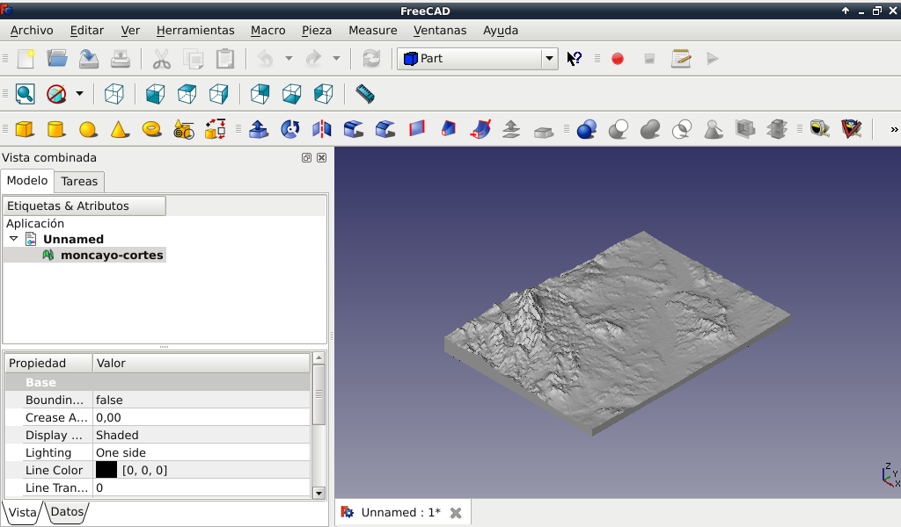

Para poder imprimir en 3D mapas de Google Maps, he ecnontrado una aplicación en Github de ThatcherC llamada Terrain2STL.
El proyecto está aquí: https://github.com/ThatcherC/Terrain2STL
Y la aplicación web aquí: http://jthatch.com/terrain2stl/
Cuando lo haya probado, comentaré mis impresiones.
De momento aquí va una imagen del mapa 3D del Moncayo y las Bardenas Reales (Aragón, Castilla-León y Navarra) vistos desde FreeCad:
